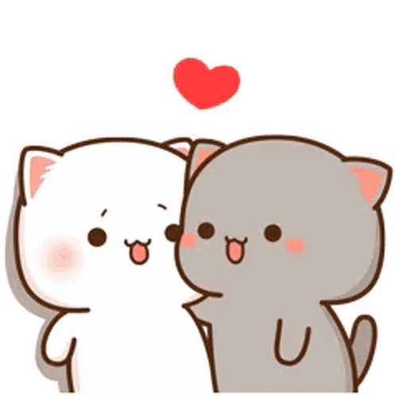
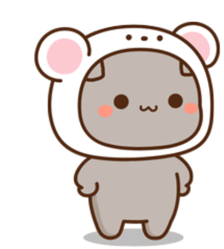
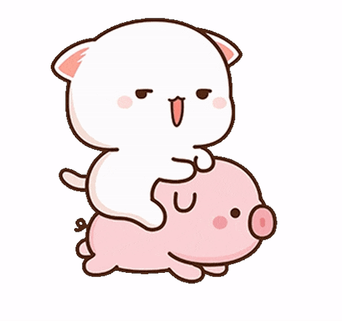
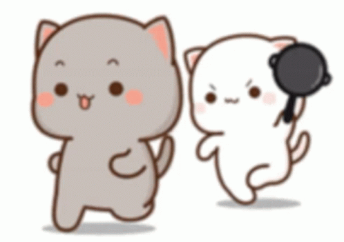
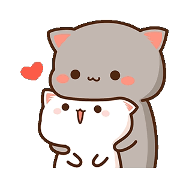
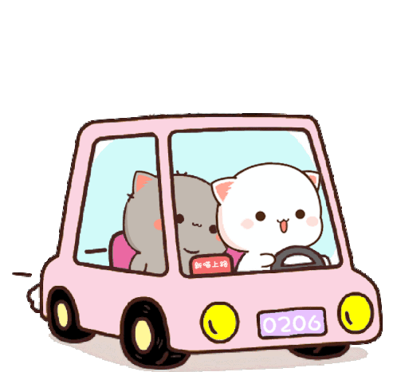

¿Porque utilizar los gatos?




Representarnos a través de los gatos animados es una elección que va más
allá de la simple estética. Estos felinos caricaturizados se han convertido en un
lenguaje visual poderoso y significativo para nosotros y muchas personas. Permíteme explicar
algunas razones profundas detrás de esta elección:
- Inocencia y Juego: Los gatos, con su curiosidad y su naturaleza juguetona, nos recuerdan la importancia de mantener viva nuestra niñez interior. Los dibujos animados de gatos capturan esa esencia lúdica y nos permiten conectarnos con la parte más inocente de nosotros mismos.
- Versatilidad Emocional: Los gatos pueden expresar una amplia gama de emociones: desde la dulzura de un gatito acurrucado hasta la astucia de un gato travieso. Al representarnos con estos personajes, podemos comunicar nuestras propias emociones de manera sutil y variada.
- Autenticidad y Vulnerabilidad: Aunque los gatos animados pueden parecer simples, a menudo reflejan nuestras propias vulnerabilidades. Al elegirlos como representación, estamos diciendo: “Sí, soy humano, con mis altibajos, mis momentos tiernos y mis travesuras”.
- Empatía y Compañía: Los gatos son compañeros leales y empáticos. Al elegirlos como representación, estamos expresando nuestro deseo de conexión y apoyo mutuo. Nos recordamos que no estamos solos en este viaje.
Pero la verdad tambien es porque la gatita es blanca y eres tu amor 🤭🤭
y el otro es gris, casi negro, que seria yo amor 🤭🤭



